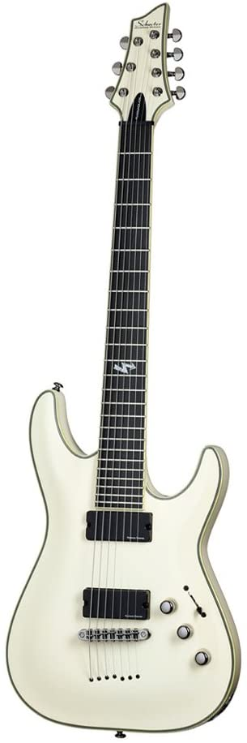

| 
| Schecter BlackJack ATX C7 |
- I whish I would change my strings more often
- It was actually quite hard to find a picture of my exact guitar online
- She is unfortunately scratched on one side, even though it is hadrly noticable it bothers me very much
- It would be nice if I changed the battery on her for the active Seymour Duncan Blackouts
|